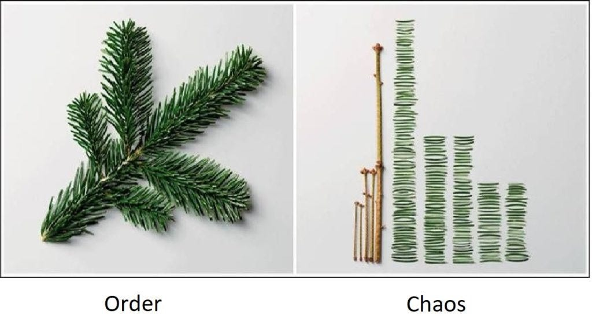
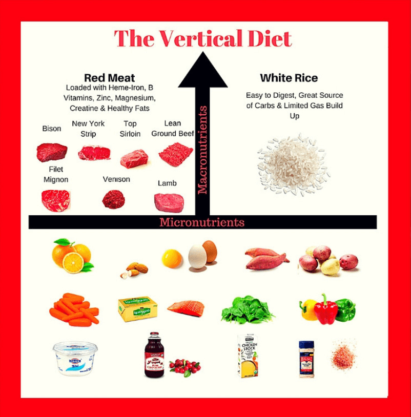

30 天多巴胺排毒，重置你的人生
如果你更喜欢视频版，这封信也有对应的视频版：
这封信写给这样的时刻：生活开始失去它的惊奇感与生机。
当你感觉疲惫多于平静。
当你可能都没意识到，自己正把咖啡当作安抚毯。
当你开始注意到眼下的黑眼圈。
当你回望过去，那时候的生活浑然一体，甚至近乎神奇。
因为活在今天这个世界，有一个残酷的现实。
光是活着，我们就是在承担风险。
但不是好的那种风险。
是放纵科技的风险（社交媒体、流媒体、游戏、新闻）。
是模拟性刺激的风险（色情内容、约会软件）。
是消耗品的风险（酒精、毒品、垃圾食品）。
是寻求刺激的风险（赌博、购物狂潮，或极限场所）。
现在——我不是要把你的行为妖魔化。我绝不是圣人。我只是个喜欢研究奇怪事物、然后分享所学的人（为了钱，没错，但也是为了意义。如果我想赚得盆满钵满，我早就去创立一个宗教了）。
网上的人大多喜欢装出一副完美的样子。你稍微做点不太好的事，他们是第一个冲出来指点你的；可一旦你去看他们的生活，他们在心智、身体、精神或财务上的状态，通常都不是你想成为的样子。
这周里，你至少已经 5 次做了别人眼中不太好的事。
没关系。你活得好好的。但那不是我们今天在这里要讨论的。
相反，我想谈的是这个：
当你生活在今天这个充满便捷速效快感的世界里，如果你不想变成和尚（因为如果你真的想要那样，那也是出于自负，我觉得这很好笑），你就需要一件工具，来对你的人生执行一次"恢复出厂设置"。
人类创造工具，是为了解决问题。
科技制造问题，但也让人类做到了过去不可能的事。
如果你每年至少做一次、每次 30 天，你会缓冲下现代生活的种种后果。
换句话说，你会把孩童般的好奇心带回来，让你能更深层地体验生活。
廉价多巴胺流行病
你的大脑靠"显著性网络"（salience network）运作。
意思是：什么东西提供的多巴胺最多，什么就成了最重要的事。
我想你已经能看出这会变成多大的问题了，但我们不妨玩点有意思的，把它拆开看。
正如我们讨论过太多太多的，米哈里·契克森米哈赖（Mihaly Csikszentmihalyi）发现：心流状态（也就是人类体验的最优状态……纯粹的享受）需要特定的技能与挑战之比。
如果目标的挑战高于你的技能水平，你会焦虑。如果挑战太低，你会无聊。你 1 级的时候不会去挑战 100 级的角色。那说不通。
过度刺激会毁掉心流状态——也就是享受的——可能性，因为它抬高了你觉得"有刺激"的门槛。凡是比你的手机、赌博、色情、派对更无聊的东西，都会被你的大脑自动贴上"无聊"的标签。
"多巴胺排毒"已经成了营销得很到位的一种重置刺激基线的方法。
它之所以有效，有 3 个原因：
1) 无聊是通往新奇感的入口
卡尔·荣格（Carl Jung），心理学的 OG，反复强调阴影工作（shadow work）的重要性——直面我们通常回避的、自己不舒服的那一面。
与无聊相处，做的正是这件事。
当理性心智停止试图解决一切时，它会激活突破性的洞见。
它揭示外部条件化之下我们真实的欲望。
它为 3 个心流触发器铺好舞台，让你更可能进入一段高强度学习与构建的时期：
- 深度具身——与不适感共处、保持临在
- 新奇感——无聊逼着你去寻找新的、更健康的刺激
- 不可预测性——不知道虚空里会浮现出什么
你会无聊，是因为你没有一个使命（quest）。
你之所以没有使命，是因为你在玩别人的游戏。
反直觉的是，解法恰恰是停下那些游戏，与你的无聊相处，直到属于你自己的游戏变清晰为止。
2) 被剥夺时，大脑会上调多巴胺受体
享乐适应（hedonic adaptation）是你的心理恒温器。
无论温度升到多高、降到低，它总会试图回到设定值。
这就制造了心理学家所说的"享乐跑步机"。你永远在奔向下一个快乐来源，但满足感从不持久。每一次体验都成了你的新常态，需要更强烈的刺激才能达到同样的情绪高点。
但当你剥夺自己快乐时，会发生相反的事。享乐跑步机的倒转。
先是缓慢地，然后迅速地，简单的快乐重新变得享受起来。你会体验到佛教所说的初学者之心。
你在外面散步时，会注意到天空里的细节。你会注意到烹饪得当的餐饭里那一缕迷迭香。生活重新变得电光石火，就像它本该的那样。
3) 你不需要动机，你需要的是清晰
人类所有的问题，都源于人无法安静地独自待在一个房间里。
—— Naval Ravikant
你上一次为"涌现"腾出空间，是什么时候？
现实就是这样运作的。
透过混沌，或者透过对混沌视角的改变，秩序就会浮现。

多巴胺排毒为"意义构建"（sense-making）腾出了空间。也就是说，处理和整合你的经验。
在信息时代，现代科技制造了"语境坍塌"（context collapse）。我们的大脑只能处理有限量的信息——通过有意识的注意力，大约是每秒 50 bit。
如果你连续一个月每天放纵饮食，你大概会长出相当可观的脂肪。
如果你从装上 App 那天起，每天都在信息上暴饮暴食（社交媒体就是典型例子），那你就是一副精神肥胖的身躯在行走。你没注意到，是因为它已经变成了常态（稳态）。
当你把自己剥夺到无聊的程度时，你几乎被迫去直面那些多年来被你压抑下来的所有问题。
那会很痛，但只要你与它相处得足够久，你会迎来一阵清晰感，把你送入人生的新阶段。
多巴胺排毒协议
最终目标不是变成苦行僧、或和尚、或跑去林子里生活、从此再也不体验现代快感。
目标是发展出主权（sovereignty）与能动性（agency）：有意识地选择、而不是强迫性地反应的能力；察觉你的人生正驶向哪里、生成与你想要的未来一致的新目标、并在不需要任何人许可的情况下朝那些目标行动的能力。周期性的排毒是一个校准工具，让你每 6-12 个月回到正轨。
这为最高人类抱负奠定了地基——我们的主与救主米哈里·契克森米哈赖（Mihaly Csikszentmihalyi）所说的：
一种由心流状态构成的人生，其中挑战与技能在完美的和谐中起舞，通过投入的注意力与行动创造意义。
把这些都说完之后，这里是协议：
1) 痛苦与收益的故事
在继续之前，有一个问题。
你读到了这里。
你喜欢你正在读的内容。
你有动力改变你的生活。
但我们都清楚，除非你为身份的转变铺好舞台（因为所有持久的行为改变都是身份改变），你两周内就会放弃。
你需要创造一个发自内心的、情感化的、具体的故事。
确切地说是两个故事：一个是你如果继续在痛苦中生活、人生将走向何方；另一个是你如果决定改变，将变成什么样的人。
对此我很乐意使用 AI，因为想挖掘自己的心智并不容易——你总会撞上某种限制性信念被拦下来。
试试我做的这个极其详尽的 AI 提示词，用它把这些故事从你脑子里挖出来。
免责声明：我把它设置得相当猛烈。它挖得很深，试图找到你动机的根源。请留意这一点。
这只是 Superhuman90（一个 90 天重置人生的协议）里 4 个提示词中的 1 个。
2) 进入僧侣模式
如果你以前从没做过这些，它会很难。
而如果你没有一个足够深的内在理由去坚持到底，你大概率会很快放弃。这就是第 1 步为什么那么重要。
在这 30 天里，你要消除：
- 放纵科技（社交媒体、流媒体、游戏、新闻）
- 非自然性刺激（色情内容和约会软件）
- 消耗品（酒精、毒品、垃圾食品，以及总体上的"甜"）
- 寻求刺激（赌博、购物狂潮、极限场所）
现在，如果你在问："那我该拿我的时间怎么办？"
问题恰恰就出在这里。
什么叫"拿我的时间怎么办"？你就做那些没有成瘾的人做的事。
你活动。你锻炼。你跟人说话。你准备你的食物。你为了目标去学习和构建。而当你没在做这些的时候，你就与无聊相处，直到它不再无聊为止。
3) 每天走 10,000 步
有意思的是，"每天 10,000 步"这个指标，最初是为了推销计步器而创造出来的。
步行的最佳区间其实是 7,000-8,000 步。大部分收益都在那里。10,000 步只是听起来更好听。
为什么走路？
- 对大多数不训练的人来说，这是一种低强度有氧运动。
- 它改善消化、血压和胰岛素敏感性，帮你变瘦并维持苗条。
- 你终于能晒到太阳，把你的昼夜节律健康修好。
- 它是一段不分心的时间，用来学点新东西（听有声书或讲座）。
- 你可以平复内心的纷乱，反思你的人生。
- 你可以生成能在你的深度工作时段里用到的想法。
具体地，我建议早、中、晚三餐之后各走 20 分钟。
那大概能让你接近 10,000 步。
你会晒到晨光、午光与暮光，这会提升你的睡眠质量。
你会开始减掉水分和炎症，在坚持的头 7 天里，你会看起来明显更精瘦。
4) 去健身房（认真的）
当我外表和感觉都很糟的时候，我不想做任何事。
我想从世界上藏起来。
我对自己的行为没有信心。
于是，我变得更不在乎。我放任自己。我暴食。我毫无纪律，只是感觉更糟。
我相信每个人都该做某种形式的抗阻训练。有氧很好，但一点肌肉量也好。而且坦白说，谁都不想被人说"你看起来像个跑者"。
男人想要宽肩和 V 型背。女人想要沙漏型身材。
你只有在健身房才能练出那种体格。
而且不，女士们，你永远不会练得"过于魁梧"。
男人们一辈子都在试图练得过于魁梧。你不会一拿起重量就长出 30 磅肌肉。
除此之外：
- 30 分钟以上的锻炼提供稳定且可持续的多巴胺释放
- 身体运动是最可靠的心流触发器之一
- 产生 BDNF（脑源性神经营养因子），支持神经可塑性
- 力量训练降低心脏病、糖尿病、癌症和早逝的风险 + 肌肉让你年老时抵御衰弱
- 肌肉越多 = 基础代谢率越高 = 你可以吃更多而不长脂肪
- 提升线粒体密度与效率 = 更多能量
我不想听你们反刍出来的"但举重有风险、你会受伤！"
是的，如果你的做法很蠢的话。
去健身房。
5) 做排除饮食法
我热爱健康与健身。
这是过去 15 年我巨大的热情所在（是的，我 15 岁时就沉迷于追踪宏量营养素和卡路里）。
我试过天上每一种饮食法。
但对于具体的饮食法，我尽量不做教条主义者。
话虽如此，我认为每个人一生中至少该认真做一次排除饮食法。
为什么？
- 它几乎保证你的能量大幅提升
- 你会降低炎症、减掉水分，看起来轻 10 磅（下颌线更紧）
- 如果你真的坚持 30 天以上，你会重新布线你的饮食习惯，并可能开始对超加工口味食物（hyper-palatable）感到反胃
- 你可能会发现哪些食物给你造成消化问题、皮肤问题、头痛，或哪些食物就是让你感觉糟糕而你自己没注意到
为了让这封信别拖太长，简化一下，试试纵向饮食法（vertical diet）。

这是健美圈里一种享有盛名的饮食法，由 Stan Efferding 创造，也是我每次回归的"基线"饮食法。
它很简单，大多数食物对大多数人都能接受，而且营养密度极高（也许能解决你根本不知道的缺乏）。
再说一遍，如果你想要我使用的训练和营养协议，以及帮你精确校准该吃多少的 AI 提示词——Superhuman90 28 日上线。
6) 构建一个提升你潜力的新项目
仔细读这一段：
学习最好的方式，是构建一个真实世界的项目，并且只在需要的时候才去搜索信息。你学到多少，与你在项目上取得多少进步直接相关。
当你看无穷无尽的教程时，你用噪音和混乱填满了你的脑子。其中大部分信息都浪费了。它导致不知所措、焦虑，并拖慢你学习得快。
等到真正要构建项目的时候（这本来就是你学习的原因），你感觉自己什么都没学到，还是得重新搜索那些信息。所以，如果你想学得更快，跳过教程阶段。先给项目列个大纲。
现在，这会让一些人困惑。
"项目"可以是任何东西。
你的健康可以是一个项目。你的生意可以是一个项目。一张 Photoshop 里的图可以是一个项目。
项目只是一个有结构的目标达成方式，或朝目标取得进步的方式。
它是进一步收窄你参照系的一种方式，让你在学习时，心智偏向正确的信息。
当你读书、研究教程或与人交谈时，好的多巴胺会喷入你的大脑，标记哪些信息对完成项目很重要。你的潜意识会慢慢咀嚼问题，并把相关的想法发送到你的意识心智。
这就是创意人所说的"淋浴想法"——当你的大脑"休息"时，默认模式网络（Default Mode Network）正在活跃。
达尔文用专注的区块推进他的项目，然后去长散步。在散步中，他的大脑处于休息状态，问题的潜在解法就蹦进他脑子里。
这里是你启动一个项目的方式：
- 选一个值得构建的东西，它朝你人生想要的方向移动指针（回到之前——你的痛苦与收益故事）
- 建一个笔记或文档，把所有能想到的东西脑力倾泻进去
- 保存 3-5 个你想模仿的灵感来源（如果我的项目是做一个 YouTube 视频，我会保存 3-5 个我想做类似迭代的 YouTube 视频）
- 研究这些来源，拆解它们的结构或特征
- 把项目列成大纲：分区、里程碑、图片、灵感、以及你需要知道的东西
- 有一个能捕捉冒出来想法的地方，最好是你不会弄丢或忘记它们的地方
现在你准备好了，但别开始学习。
7) 每晚反思 10 分钟
你的大脑一直在试图处理你的经验。
当你不给它专门的时间时，它会在最糟糕的时刻劫持你的注意力。
这就是蔡格尼克效应（Zeigarnik effect）。你的大脑会抓着未完成的任务和未处理的经验不放，制造出消耗你认知资源的张力。
反思能帮你闭合当天未完成的循环，除此之外还能：
- 它是一种元认知——关于你思考之思考——是人类智能的最高形式
- 为进步建立反馈循环——30 天后，你会有 30 个关于"什么真正推动你的人生前进"的数据点
- 把错误变成数据，而不是悔恨
- 减少你明天的决策疲劳
设一个不可协商的闹钟，晚上 9:30（或睡前 30 分钟）。
使用 3-2-1 框架。
3 个胜利。
2 个教训。
1 个早晨的意图。
用实体笔记本。没有数字兔子洞。
如果 10 分钟感觉太多，从 2 分钟开始。
多巴胺排毒清除噪音。步行创造空间。健身房建立信心。饮食优化你的生物学。项目给你目的。
反思是你追踪心智与灵性进步的方式。
谢谢你读到这里。
—— Dan
如果你想读更多，这里有我的几个产品和另外的信：
- 2 Hour Writer——学习今天世界的一项高价值技能（如果你需要一个要处理的项目）。
- Superhuman90——如果你想要完整的多巴胺排毒、训练、营养与生活方式协议。
- HUMAN 3.0 那封信——一张通往前 1% 的地图。